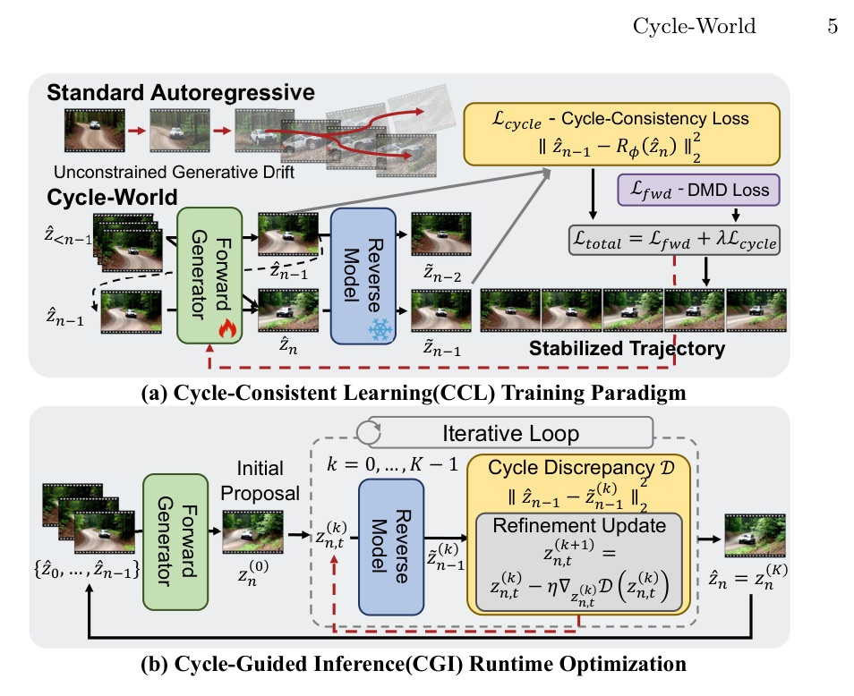
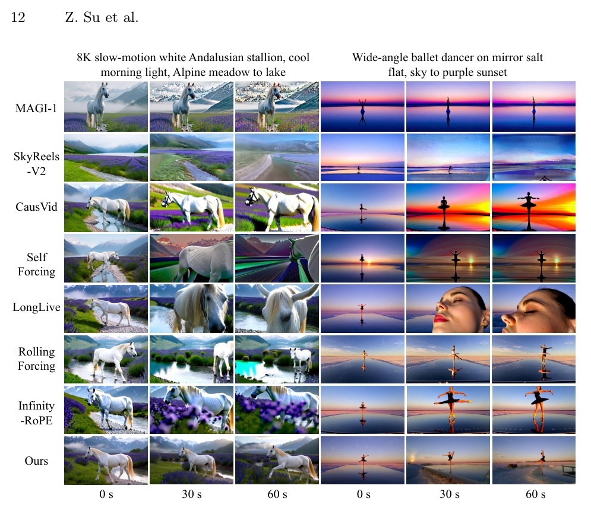

用時間可逆性約束 long-horizon autoregressive video generation 的誤差漂移
2026-09-16 retrospective pick · 65-day rollback after current discovery PDFs returned 404
不要只往前預測：讓每個未來 latent 都能回推它的過去。
future
→
past
Cycle discrepancy 是用未來反查過去的單步誤差；它是可控的 drift bottleneck。
Cycle-World 的主張不是「反向模型會生成得更好」，而是它能揭露 forward model 是否正走向不可恢復的狀態。

圖中上半是 joint training；下半是 frozen models 的 runtime optimisation。
其餘未列 hyperparameters 繼承 LongLive defaults。
| Method | 5s Total | 60s Total | 60s Sem. |
|---|---|---|---|
| Self-Forcing | 84.31 | 71.86 | 50.51 |
| LongLive | 83.72 | 82.62 | 74.97 |
| Context Forcing | 83.44 | 82.45 | 76.10 |
| Cycle-World | 84.36 | 82.88 | 76.86 |
Self-Forcing 的 5s → 60s Total: 84.31 → 71.86
Cycle-World: 84.36 → 82.88
| Method | PC | PACE | Average |
|---|---|---|---|
| Self-Forcing | 55.97 | 78.57 | 67.27 |
| LongLive | 61.94 | 78.03 | 69.99 |
| RollingForcing | 67.91 | 75.05 | 71.48 |
| Cycle-World | 69.40 | 81.91 | 75.66 |

作者用兩種 scenes 對比 0/30/60 秒；圖像結論應與量化表一起讀。
| Variant | Total | Quality | PC | PACE |
|---|---|---|---|---|
| Baseline | 83.72 | 85.42 | 61.94 | 78.03 |
| + CCL | 83.89 | 85.72 | 68.70 | 79.50 |
| + CGI | 84.51 | 86.37 | 65.67 | 78.80 |
| Full Cycle-World | 84.36 | 86.14 | 69.40 | 81.91 |
最好的工程讀法：CCL 把模型拉近 reversible manifold；CGI 把單次 rollout 拉回來。
只有 CCL，長程中仍可能有 high-frequency artifacts；只有 CGI，則缺少內建的 physical prior。
| lambda | Total | PC | PACE |
|---|---|---|---|
| 0.05 | 84.47 | 56.72 | 76.53 |
| 0.10 | 84.05 | 64.18 | 79.04 |
| 0.20 | 82.89 | 68.66 | 75.80 |
“if a generated causal sequence obeys real-world dynamics, it must be temporally reversible.”
若生成的因果序列服從真實世界動力學，它必須在時間上可逆。§1 p.3
“This approach eliminates the need for ‘Decode-Flip-Encode’ loop.”
在 shared latent space 定義 reverse task，取消昂貴的 Decode-Flip-Encode 迴圈。§3.2 p.8
“actively rectify accumulated errors ... before committing them to the historical context buffer.”
在錯誤寫入 history 前修正，是 CGI 的 operational value。§3.3 p.10
Long-horizon video generation 需要的不是更長的 context 而已，而是能拒絕不可逆 trajectory 的結構性判準。